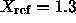
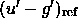
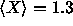
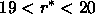
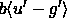

The PT has two main functions: it measures the atmospheric extinction on each clear night based on observations of primary standards at a variety of airmasses, and it calibrates secondary patches in order to determine the photometric zeropoint of the 2.5m imaging scans. The extinction must be measured on each night the 2.5m is scanning, but the corresponding secondary patches can be observed on any photometric night, and need not be coincident with the image scans that they will calibrate.
The Monitor Telescope Pipeline (mtpipe; tucker01), so called for historical reasons, processes the PT data. It performs three basic functions:
The transformation equation between the instrumental aperture photometry
and the reduced magnitude u' is given by:
and similarly in g', r', i', and z' (both i' and z' use
i'-z' as the fiducial color in the equations).
Here, a is the zero point,
k is the primary extinction coefficient, X is the airmass,
b is the first order color term coefficient,
c is the second-order extinction term coefficient,
 is a reference air mass, and  is a
reference color.
The values for these last two parameters are
chosen to keep the ``c'' term small, and
are defined to be the estimated average airmass of the survey,
, and the ``cosmic color'', respectively, as listed in
Table 23. The cosmic color values are the mean
colors of 4428
objects with  in survey run 752, camera column 3,
fields 11-100. This area is on the celestial equator at a Galactic latitude
of about 42.
For the calibrations presented in the SDSS EDR, the values for the instrumental (``b'') coefficients have been set to zero, and the values for the second-order extinction (``c'') coefficients have been set to the global values derived in the initial setup of the u'g'r'i'z' primary standard star network (Table 24) smith01. For each filter, a single value for the photometric zeropoint (``a'') is solved for each night, but typically a separate value k is determined for each three-hour block throughout the night. Typical values are given in Table 24. The net effect of forcing the b terms to 0 is that the secondary patches are calibrated on the natural system of the PT, except that the zero points in each filter are slightly offset from a true AB system. The offset for the u' band is given approximately given by , where the quantity in brackets is the mean color of all standard stars observed on a given night; offsets for other bands are given by similar expressions. These offsets amount to at most a couple of percent, and are not applied to the EDR data.